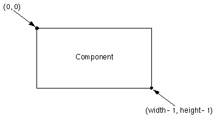

GUI: AWT Graphics |
Graphics objects are the key to all drawing. They support the two basic kinds of drawing: primitive graphics (such as lines, rectangles, and text) and images. They also provide a drawing context by maintaining state such as the current drawing area and the current drawing color.

Note:
Each Component has its own integer coordinate system, ranging from (0, 0) to (width - 1, height - 1).
The Graphics class defines methods for drawing the following kinds of shapes: